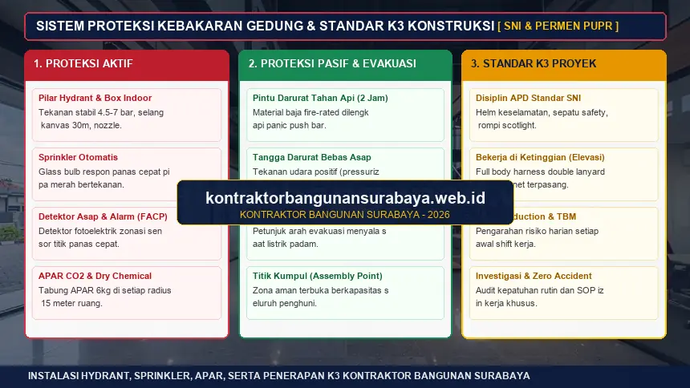

1. Apa Saja Sertifikasi dan Standar Keselamatan yang Wajib Dimiliki Gedung Komersial?
Gedung komersial umumnya wajib memiliki Sertifikat Laik Fungsi (SLF) sebagai bukti kelayakan operasional, menerapkan standar Kesehatan dan Keselamatan Kerja (K3) selama masa konstruksi, serta dilengkapi sistem proteksi kebakaran seperti hydrant dan jalur evakuasi.
kontraktorbangunansurabaya.web.id membantu pemilik proyek di Surabaya memahami dan memenuhi ketiga aspek ini sejak tahap perencanaan hingga bangunan siap dioperasikan, memastikan setiap tahapan pekerjaan pada layanan gedung dan komersial maupun penyusunan dokumen teknis desain arsitektur dan RAB telah sesuai dengan regulasi SIMBG PUPR serta Perda Kota Surabaya.
Pilar Keandalan Bangunan Gedung (Permen PUPR No. 27/PRT/M/2018)
Setiap bangunan komersial diwajibkan memenuhi 4 pilar keandalan: Keselamatan (struktur kokoh, proteksi kebakaran, petir), Kesehatan (ventilasi, pencahayaan, sanitasi), Kenyamanan (ruang gerak, suhu, akustik), dan Kemudahan (aksesibilitas disabilitas, rambu evakuasi, fasilitas darurat).
2. Proses dan Manfaat Sertifikat Laik Fungsi (SLF) Bagi Pemilik Gedung
SLF diterbitkan setelah bangunan melalui pemeriksaan kesesuaian antara kondisi fisik terbangun dengan dokumen PBG yang telah disetujui sebelumnya, termasuk pemeriksaan kekuatan struktur, sistem utilitas, dan aksesibilitas bangunan bagi penyandang disabilitas.
Memiliki SLF bukan sekadar memenuhi kewajiban administratif, tetapi juga memberikan perlindungan hukum bagi pemilik gedung apabila terjadi klaim asuransi atau sengketa terkait kelayakan bangunan, karena SLF menjadi bukti resmi bahwa bangunan telah diperiksa dan dinyatakan layak digunakan oleh pihak berwenang.
Perpanjangan SLF juga perlu diperhatikan, karena sertifikat ini umumnya memiliki masa berlaku tertentu (5 tahun untuk gedung umum/komersial), sehingga pemilik gedung perlu menjadwalkan pemeriksaan ulang sebelum masa berlaku SLF habis agar operasional bangunan tidak terganggu status legalitasnya.
Perubahan fungsi ruang setelah SLF terbit, misalnya mengubah area gudang menjadi area retail atau restoran, juga umumnya membutuhkan pembaruan SLF, karena fungsi baru tersebut bisa jadi memiliki persyaratan keselamatan, ventilasi, daya dukung beban lantai, dan utilitas yang berbeda dari fungsi awal yang telah disetujui.
| Parameter Penilaian SLF | Fokus Pemeriksaan Teknis | Regulasi & Dokumen Acuan | Dampak Terhadap Operasional |
|---|---|---|---|
| Keandalan Struktur | Uji mutu beton SNI K-300, sambungan baja WF, dan defleksi balok/kolom | SNI 1726 (Gempa) & PBG As-Built Drawing | Jaminan keselamatan penghuni dari risiko kegagalan struktur |
| Sistem Proteksi Kebakaran | Uji debit tekanan pompa hydrant, respon sprinkler, dan integritas APAR | SNI 03-1745 & Rekomendasi Teknis Damkar | Syarat mutlak polis asuransi kebakaran & izin operasional usaha |
| Sistem Utilitas & MEP | Panel distribusi daya, genset darurat, tata udara, serta instalasi penyalur petir | PUIL 2020 & Uji Kelayakan Disnaker | Mencegah bahaya korsleting listrik dan padam daya darurat |
| Aksesibilitas & Evakuasi | Ramp kursi roda kemiringan 1:12, toilet difabel, lebar pintu, dan assembly point | Permen PUPR No. 14/PRT/M/2017 | Inklusivitas fasilitas publik dan kelancaran arus evakuasi cepat |
3. Penerapan Standar K3 Selama Masa Konstruksi Berlangsung
Standar K3 di lokasi proyek mencakup penggunaan alat pelindung diri (APD) oleh seluruh pekerja, pemasangan rambu peringatan pada area berbahaya seperti tepi bangunan tinggi atau area galian, serta prosedur kerja aman untuk aktivitas berisiko tinggi seperti pekerjaan di ketinggian dan pengoperasian alat berat.

Pelaporan dan investigasi setiap insiden kecelakaan kerja, sekecil apa pun, juga menjadi bagian penting dari budaya K3 yang baik, karena pola kejadian yang tercatat dapat membantu mengidentifikasi titik-titik rawan kecelakaan sebelum insiden yang lebih serius terjadi di kemudian hari.
Briefing keselamatan singkat (safety induction dan Toolbox Meeting harian) kepada setiap pekerja baru sebelum memulai aktivitas di lokasi proyek juga menjadi praktik standar yang membantu menanamkan kesadaran K3 sejak hari pertama, terutama bagi pekerja harian yang mungkin belum terbiasa dengan standar keselamatan di proyek berskala besar.
Kedisiplinan APD & Zona Bahaya
- APD Wajib Lengkap: Helm keselamatan SNI, sepatu safety ujung baja, rompi high-visibility, dan full-body harness bersertifikasi untuk elevasi >1.8 meter.
- Barikade & Rambu Visual: Pemasangan safety net tepi plat lantai, barikade galian pondasi dalam, dan batas radius manuver crane.
- SOP Izin Kerja Khusus (Permit to Work): Pengawasan langsung untuk pekerjaan panas (pengelasan rangka baja) dan ruang terbatas (ground tank).
Budaya Zero Accident & Inspeksi
- Toolbox Meeting Rutin: Pengarahan teknis keselamatan 10 menit setiap pagi sebelum jam operasional proyek dimulai.
- Pemeriksaan Kelayakan Alat: Verifikasi berkala sertifikat operator alat berat, scaffolding tubular, dan kabel daya listrik kerja.
- Tanggap Darurat Medis: Ketersediaan pos P3K lapangan lengkap dan alur rujukan rumah sakit terdekat di wilayah Surabaya.
4. Sistem Proteksi Kebakaran yang Diterapkan pada Proyek kontraktorbangunansurabaya.web.id
Sistem proteksi kebakaran pada gedung komersial umumnya mencakup detektor asap, sprinkler otomatis, hydrant, serta jalur dan tangga darurat yang dirancang sesuai kapasitas dan jarak tempuh maksimal menuju titik kumpul aman.
kontraktorbangunansurabaya.web.id memastikan perencanaan sistem proteksi kebakaran sudah terintegrasi sejak tahap desain, bukan ditambahkan belakangan setelah bangunan hampir selesai, sehingga penempatan jalur evakuasi dan titik pemasangan alat pemadam dapat berjalan optimal tanpa mengorbankan fungsi ruang lainnya.
Komponen Proteksi Kebakaran Aktif & Pasif Terpadu:
- Jaringan Pipa Hydrant & Siamese Connection: Pillar hydrant halaman dan indoor hydrant box lengkap dengan selang kanvas, nozzle variabel, dan sambungan pasokan mobil pemadam.
- Sistem Sprinkler Otomatis: Head sprinkler berlabel suhu presisi yang terhubung dengan pompa jockey, elektrik, dan diesel bertekanan konstan.
- Tangga Darurat Bertekanan Positif: Pintu darurat tahan api 2 jam (*fire door*) dengan push bar darurat dan kipas *pressurization* agar bebas asap saat evakuasi.
- Sistem Deteksi Asap & Panas: Detektor photoelectric terkoneksi ke Fire Alarm Control Panel (FACP) untuk notifikasi zonasi kebakaran instan.
Uji fungsi berkala terhadap seluruh sistem proteksi kebakaran, termasuk simulasi evakuasi bagi penghuni gedung, juga menjadi bagian dari komitmen keselamatan jangka panjang melalui layanan maintenance bangunan, bukan hanya dipenuhi sekali pada saat pengajuan SLF pertama kali.
Pemilihan lokasi penempatan alat pemadam api ringan (APAR) yang mudah dijangkau dan terlihat jelas, disertai pelabelan yang sesuai standar, juga menjadi detail kecil yang memengaruhi efektivitas sistem proteksi kebakaran secara keseluruhan pada saat kondisi darurat benar-benar terjadi.
Sertifikasi dan standar keselamatan ini merupakan bagian dari keseluruhan proses konstruksi gedung komersial. Baca kembali panduan mengenai kontraktor gedung komersial untuk memahami tahapan perencanaan hingga pengurusan izin secara menyeluruh.
Komitmen Mutu & Kepatuhan Regulasi Penuh
Kontraktor Bangunan Surabaya mendampingi seluruh tahapan uji fungsi komisioning, perakitan dokumen as-built drawing, hingga sertifikat kelaikan fungsi diterbitkan secara legal dan aman.
5. FAQ Seputar Sertifikasi dan Keselamatan Gedung Komersial
6. Konsultasi Gratis Sekarang
Ingin berdiskusi lebih lanjut mengenai kebutuhan konstruksi bangunan Anda di Surabaya? Hubungi tim kami melalui WhatsApp di 0889-8964-3555 untuk konsultasi awal tanpa biaya bersama kontraktorbangunansurabaya.web.id.
Konsultasi WhatsApp di 0889-8964-3555Tim Ahli K3 & Legalitas Struktur Gedung Kontraktor Bangunan Surabaya
Divisi Pengawasan Keselamatan Konstruksi, Uji Laik Fungsi Gedung Komersial, Perhitungan Beban Struktur SNI, serta Pendampingan Sertifikasi SLF di Surabaya Raya dan Jawa Timur.